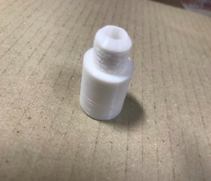

試作品2ということで試作品1を改良し、ライトを3つに、配線を通すための穴（穴はねじの雌になっている）を追加した。
新津さんに教えてもらった動画を参考して作った。 しかし面取りをしていなかったり、サイズの誤差によってなかなかはまらなかった。 上手くはめるために参考にしたサイトがこちら
はめることはできたが半分ほど進むと全く動かなくなる…
配線を穴に通すことが出来る。
今回は植物栽培のための光の色の数も調整した。参考にしたサイトでは赤25・青6が一番よく育っているのでこの比率を取り入れた。 実際に光らせてみる（上からと下からの図）
コードが力技っぽくなった...他に良い方法があるはず
参考にしたサイトがこちら
- #include <Adafruit_NeoPixel.h>
-
- #define PIN 6
- Adafruit_NeoPixel strip = Adafruit_NeoPixel(24,26, NEO_GRB + NEO_KHZ800);
- // | | | |
- // | | | +--clock
- // | | +---LEDの並び方
- // | +--接続ポート
- // +--LEDの数
- //独立して2本までは下記のように宣言して制御可能
- #define PIN2 7
- Adafruit_NeoPixel strip2=Adafruit_NeoPixel(24,PIN2,NEO_GRB+NEO_KHZ800);
-
- void setup() {
- strip.begin();
- strip.show(); // Initialize all pixels to 'off'
- }
-
- void loop() {
- strip.setPixelColor(0,strip.Color(255,0,0));
- strip.setPixelColor(1,strip.Color(255,0,0));
- strip.setPixelColor(2,strip.Color(255,0,0));
- strip.setPixelColor(3,strip.Color(255,0,0));
- strip.setPixelColor(4,strip.Color(0,0,255));
- strip.setPixelColor(5,strip.Color(255,0,0));
- strip.setPixelColor(6,strip.Color(255,0,0));
- strip.setPixelColor(7,strip.Color(255,0,0));
- strip.setPixelColor(8,strip.Color(255,0,0));
- strip.setPixelColor(9,strip.Color(0,0,255));
- strip.setPixelColor(10,strip.Color(255,0,0));
- strip.setPixelColor(11,strip.Color(255,0,0));
- strip.setPixelColor(12,strip.Color(255,0,0));
- strip.setPixelColor(13,strip.Color(255,0,0));
- strip.setPixelColor(14,strip.Color(0,0,255));
- strip.setPixelColor(15,strip.Color(255,0,0));
- strip.setPixelColor(16,strip.Color(255,0,0));
- strip.setPixelColor(17,strip.Color(255,0,0));
- strip.setPixelColor(18,strip.Color(255,0,0));
- strip.setPixelColor(19,strip.Color(0,0,255));
- strip.setPixelColor(20,strip.Color(255,0,0));
- strip.setPixelColor(21,strip.Color(255,0,0));
- strip.setPixelColor(22,strip.Color(255,0,0));
- strip.setPixelColor(23,strip.Color(255,0,0));
- strip.setPixelColor(24,strip.Color(0,0,255));
- // | |
- // |
- // +--LED番号
- strip.show();
- }